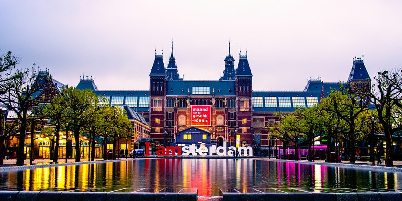
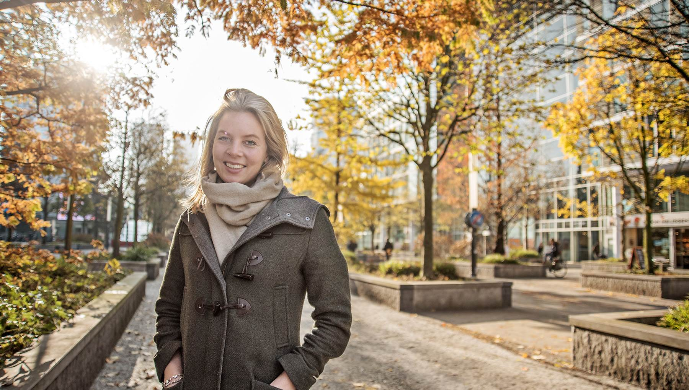
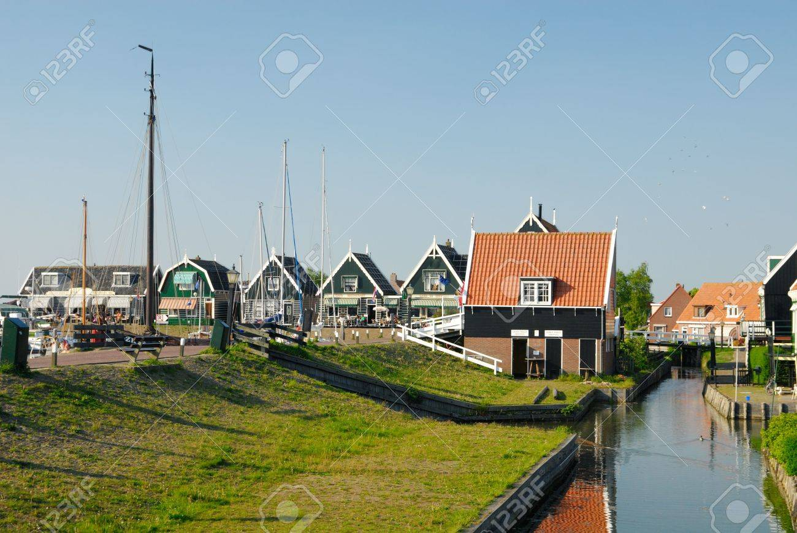
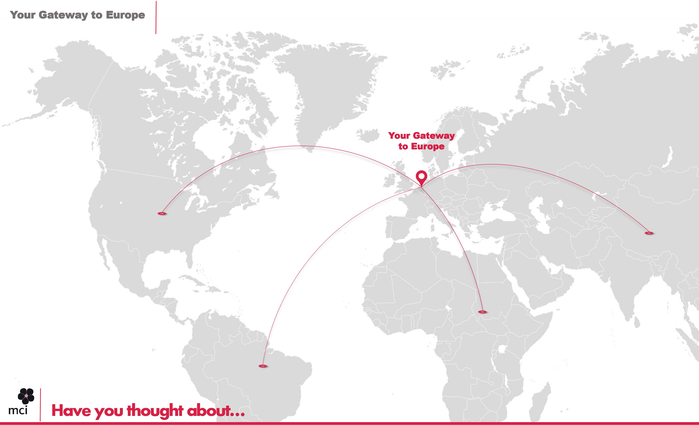

|  |
 |
Cultural capital
Amsterdam’s cultural and social life is so varied and extensive – there are world-class museums, restaurants, theatres and concert halls, as well as so many unique cultural experiences such as canal-side concerts and large-scale outdoor festivals – that there is something for everyone to enjoy. And the canals and historic neighbourhoods make for a beautiful, impressive environment to live and work in. |
Amsterdam's high quality of life
Amsterdam enjoys one of the lowest costs of living of the European capitals. With its historic city centre, healthy work/life balance, competitive business benefits and cultural diversity, the city has many reasons to boast. With their city ranked at number three in the OECD work/life balance study and regularly coming up high in Mercer’s Quality of Living index, Amsterdammers sure have this one figured out. |
|  |
|
Small village feeling
Amsterdam is simple to get around in and easy to explore. At a size of only 219 square kilometers and with a propensity towards ‘vertical living’, in Amsterdam ways are short, everything is accessible and new arrivals find it easy to become familiar with the city, feeling at home after a short time. This village-like charm is combined with the cosmopolitan vibe and cultural life of a European capital. |
English as business language
If you can’t quite get the guttural ‘g’ sound right and you’ve never been able to roll your ‘r’s, don’t worry, most Amsterdammers can and will speak English, plus the business language in most international companies is English. However, learning the local language will always open more doors, so enrolling in a Dutch language course is a good way to integrate. |
|
|
Job opportunities
Amsterdam Airport Schiphol has been voted one of the best airports in the world on numerous occasions, and it’s easily accessible with fantastic rail and road links; in addition, there are excellent high-speed rail services connecting Amsterdam to various cities, so the rest of Europe is practically at the end of the street. |
Less red tape
IN Amsterdam (formerly 'Expatcenter Amsterdam') works in partnership with the government, helping highly skilled migrants and their families with official matters and formalities such as residence permits, work visas or the 30% tax ruling quickly and efficiently. |
|  |
|
Gateway to Europe
Amsterdam’s cultural and social life is so varied and extensive – there are world-class museums, restaurants, theatres and concert halls, as well as so many unique cultural experiences such as canal-side concerts and large-scale outdoor festivals – that there is something for everyone to enjoy. And the canals and historic neighbourhoods make for a beautiful, impressive environment to live and work in. |
International community
Diversity and inclusion is integral to Amsterdam, and no occasion is better for witnessing that than when the city celebrates all its major cultural festivals. And with people of 180 different nationalities living in the city, you can find a huge variety of restaurants and shops and a large number of different religious centres. |
|
 |
Easy commuting
With roughly 2.5 bikes per head in the Netherlands, it’s no surprise that getting around the city by bicycle is everyone’s preferred mode of transport. With dedicated cycle lanes and road rules designed to protect cyclists, cycling is a simple and healthy way to get anywhere in the city and may well be a key ingredient towards enjoying a happier lifestyle. And if bad weather’s making you feel disinclined to jump on the saddle, the public transport system is a fast, reliable and efficient back-up. |
Great for children
The standard of schooling is always important and there are a wide variety of education facilities in Amsterdam, ranging from the traditional Dutch schools and colleges to numerous high-quality international schools following various international curricula. But even more importantly, Dutch children are amongst the happiest in the world, making Amsterdam a great place to raise a family. The city is generally very welcoming to families, and there are plenty of family-friendly cafés, lots of things to do and places to play, such as the many fantastic parks in and around Amsterdam. |